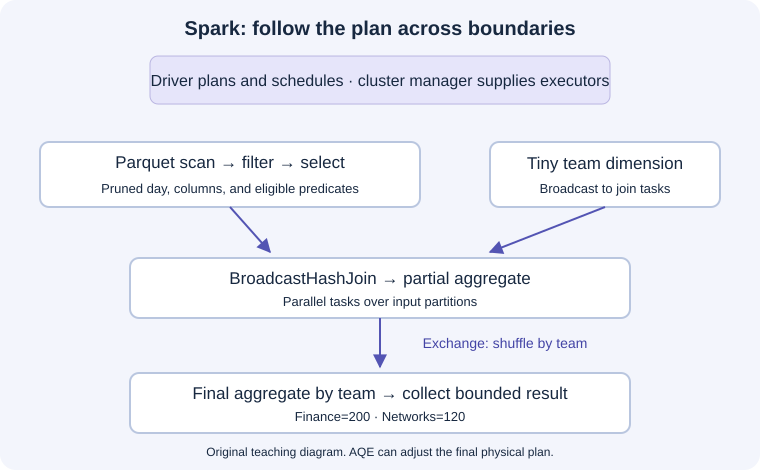

Spark Performance Optimization: Read the Physical Plan First
Validate pruning, pushdown, join strategy, AQE, caching, and file layout against a reproducible PySpark result.

- Prune partitions + columns + eligible predicates
- Broadcast small dimension → aggregate exchange
- Check final plan + output totals + runtime evidence
A runnable baseline
Use the linked orders_lab.py with PySpark 3.5.7, Python 3.10–3.12, and JDK 17. The validation record states the actual runtime tested. The script creates its own temporary Parquet fixture and removes it afterward, so it can be rerun without relying on private data or a metastore. Install the pinned dependency in a virtual environment and run the commands below.
The fixture includes two days and two sectors. Filtering to November 14 and amounts of at least 100 excludes both a small order and a later-day order. A small sector-to-team dimension is joined, then amounts are summed. Expected results are Finance=200 and Networks=120; the script asserts them rather than asking the reader to eyeball a table.
Three different ways to read less
Partition pruning removes irrelevant directory partitions using the day predicate. Column pruning reads the needed columns rather than every field. Predicate pushdown lets the source filter or skip work using supported predicates and metadata. They are related optimizations with different evidence.
In formatted explain output, inspect PartitionFilters, ReadSchema, and PushedFilters. A listed pushed filter does not prove every row group was skipped; actual savings depend on file statistics and data distribution. Function-wrapped columns, incompatible types, or connector limitations can prevent the intended optimization. Compare scanned bytes and output rows before claiming an improvement.
Broadcast joins and AQE
The explicit broadcast hint in the lab is safe because the dimension is tiny and controlled. In production, verify the serialized size, duplicate-key behavior, and per-executor memory budget before forcing a broadcast. A large replicated build side can turn a network optimization into executor OOM. Accurate statistics help Spark choose without an unconditional hint.
AQE can coalesce shuffle partitions and change eligible join strategies using runtime statistics. Inspect both initial and final plans after an action. AQE does not make all skew or poor source layouts disappear. Compare the longest tasks and spill metrics before and after a change, and retain a correctness assertion on the output.
Caching, memory, and file sizing
Cache a dataset when it is reused enough to repay materialization and memory pressure. A one-pass scan often gets no benefit. Materialize deliberately, observe storage usage, and unpersist after reuse. Cached blocks compete with execution memory; caching everything can increase eviction, spill, and GC.
Aim for file sizes that balance parallel reads against per-file listing and task overhead for your connector and workload. There is no universal target. Reducing output partitions can shrink the file count but create a long single-task tail. Too many partition directories also inflate metadata work. Measure listing time, scan throughput, task count, and downstream query behavior together.
Choose a change by its evidence
Capture the baseline input snapshot, Spark version, configuration, physical plan, runtime, task percentiles, shuffle bytes, spill, and result totals. Change one meaningful variable, rerun, and compare. For skew, inspect key-frequency distribution and consider preaggregation or a targeted strategy rather than blindly increasing every shuffle count.
The local lab verifies result correctness and the expected plan features. Its four-row fixture cannot establish a speedup. Benchmark claims require representative scale and repeated measurements, and production changes require the platform’s own compatibility and rollout checks. The operational goal is a reliable publication deadline at acceptable cost.
Run the PySpark lab
Executed locally: PySpark 3.5.7, Python 3.12, JDK 17.0.17, local[2]. No distributed-cluster or performance benchmark claim.
# From the portfolio checkout, with Python 3.10–3.12 and JDK 17:
python3 -m venv .venv
.venv/bin/python -m pip install pyspark==3.5.7
SPARK_LOCAL_IP=127.0.0.1 .venv/bin/python examples/spark/orders_lab.py"""Deterministic local Spark 3.5.7 lab. Run with Python 3.10–3.12 and Java 17."""
import tempfile
import re
from pathlib import Path
from pyspark.sql import SparkSession, functions as F
spark = (SparkSession.builder.master("local[2]").appName("orders-learning-lab")
.config("spark.sql.shuffle.partitions", "4")
.config("spark.sql.adaptive.enabled", "true").getOrCreate())
spark.sparkContext.setLogLevel("WARN")
try:
with tempfile.TemporaryDirectory(prefix="spark-orders-") as directory:
path = str(Path(directory) / "orders")
orders = spark.createDataFrame([
(1, "telecom", 120, "2026-11-14"),
(2, "telecom", 80, "2026-11-14"),
(3, "banking", 200, "2026-11-14"),
(4, "telecom", 50, "2026-11-15"),
], "order_id long, sector string, amount long, day string")
orders.write.partitionBy("day").parquet(path)
selected = (spark.read.parquet(path)
.where((F.col("day") == "2026-11-14") & (F.col("amount") >= 100))
.select("sector", "amount"))
dimensions = spark.createDataFrame([("telecom", "Networks"), ("banking", "Finance")],
"sector string, team string")
joined = selected.join(F.broadcast(dimensions), "sector")
totals = joined.groupBy("team").agg(F.sum("amount").alias("total"))
print("PHYSICAL PLAN (inspect FileScan, PartitionFilters, PushedFilters, BroadcastHashJoin, Exchange):")
totals.explain(mode="formatted")
result = {row.team: row.total for row in totals.collect()}
assert result == {"Networks": 120, "Finance": 200}, result
plan = totals._jdf.queryExecution().executedPlan().toString()
for marker in ("BroadcastHashJoin", "PartitionFilters", "PushedFilters", "Exchange"):
assert marker in plan, f"Expected {marker} in physical plan"
assert re.search(r"PartitionFilters: \[[^\]]*2026-11-14", plan), plan
assert re.search(r"PushedFilters: \[[^\]]*GreaterThanOrEqual\(amount,100\)", plan), plan
assert "ReadSchema: struct<sector:string,amount:bigint>" in plan, plan
print("PASS: Finance=200, Networks=120; plan includes pruning, pushdown, broadcast, shuffle")
finally:
spark.stop()
PASS: Finance=200, Networks=120; plan includes pruning, pushdown, broadcast, shuffleIf Java cannot start, check JAVA_HOME and use a full JDK 17. If hostname binding fails locally, keep SPARK_LOCAL_IP=127.0.0.1. If a plan marker changes, confirm the Spark version and inspect the formatted plan before weakening the assertion.
Source, versions, and further reading
Earlier PySpark notebooks provide additional exercises. The new self-contained lab avoids local dataset-path assumptions in those notebooks.
Discuss the engineering decision
Which plan feature would prove your filter reduced input work rather than only filtering after the scan?